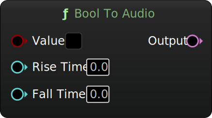

MetaSound Branches
Bool To Audio
Category: Conversions
Convert a boolean value to an audio signal, with optional rise and fall times.
Inputs
| Name | Description | Type |
|---|---|---|
| Value | Boolean input to convert to audio. | Bool |
| Rise Time | Rise time in seconds. | Time |
| Fall Time | Fall time in seconds. | Time |
Outputs
| Name | Description | Type |
|---|---|---|
| Out | Audio signal. | Audio |
Charles Matthews 2024